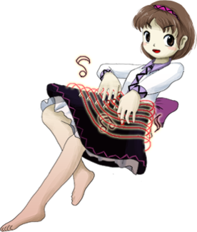
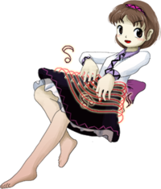

- Welcome to Touhou Wiki!
- Please register to edit. For assistance, check in with our Discord server or IRC channel.
Yatsuhashi Tsukumo
Yatsuhashi Tsukumo t͡sɯ̥kɯmo jat͡sɯ̥haɕʲi | |
|---|---|
|
 Yatsuhashi Tsukumo in Double Dealing Character Tsukumogami of an Aging KotoMore Character Titles | |
| Species |
Tsukumogami (kotofurunushi) |
| Abilities |
Making sounds and performing on her own |
Music Themes | |
| |
Appearances | |
| Official Games | |
| |
| Print Works | |
| |
Yatsuhashi Tsukumo (九十九 八橋 Tsukumo Yatsuhashi) is a tsukumogami, transformed from a koto. She is the younger sister of Benben Tsukumo, though they are technically not blood related, and just became sentient at the same time.
General Information[edit]
Yatsuhashi appeared as the Stage 4 boss and midboss of Double Dealing Character, as has also appeared as the very first boss of Impossible Spell Card on the first day, who then re-appears later on as a recurring boss on the fifth day. As a koto tsukumogami, she carries a koto, and uses it in her attacks and spell cards.
Backstory[edit]
Both Benben and Yatsuhashi were once merely instruments used by others in the Outside World, but eventually they came to Gensokyo. When the Miracle Mallet was used, its magical power flooded into them, and they both became tsukumogami at around the same time. However, they quickly learned where their power was coming from (the Shining Needle Castle) and decided to overthrow society as tools, like Seija Kijin did as well.
Background Information[edit]
Name[edit]
Her full name is Yatsuhashi Tsukumo (九十九 八橋). Her family name is a short form of "tsukumogami" that was changed into different kanji, which can read as the number "99". Her personal name is derived from the most famous koto player in Japanese history, "Kengyou Yatsuhashi" (八橋検校); Yatsuhashi is a family name, and "kengyou" is a rank of official servants who play instruments. The motif of hers might be derived from a tsukumogami of koto "Kotofurunushi" (琴古主).
Design[edit]
Yatsuhashi has short brown hair with a magenta headband with diagonal stripes on it. Her clothes consist of a white shirt, with lilac accents, a purple bow on the back of her waist, and a black skirt with a purple zigzag pattern at the bottom. She wears no shoes or socks.
Yatsuhashi's Appearances[edit]
Games[edit]
- Double Dealing Character
Both Benben and Yatsuhashi appear before the player character in Stage 4, though only one of them fights the player at a time. The fight the player gets is decided by which shot type they choose - if they opted to not take their weapon along, they face Benben as the mid-boss and Yatsuhashi later as the main boss' if they did take their weapon, it is vice-versa. At first, the two of them are under the impression that the heroine is looking to join their side, but it quickly turns violent. After being defeated, she points out the Shining Needle Castle, which is where they're getting their power from.
Between the main game and the extra stage, they were approached by Raiko Horikawa, who explained what had happened - and a way out of their situation. The two tsukumogami had realized that their power was coming from the Miracle Mallet. Not wanting to return to being tools, they successfully replaced the magical power they used to survive as self-aware beings with one from the outside world. The heroine must fight both of them at once.
Spin-offs[edit]
- Impossible Spell Card
Presumably from hearing or seeing a wanted sign about the mischief-making amanojaku Seija Kijin, Yatsuhashi is the first of the many youkai that tries to capture her. She uses spell cards that are considered impossible to dodge, and is also the one that explained to Seija that everyone will use any mean necessary to defeat her.
Relationships[edit]
Benben Tsukumo[edit]
Yatsuhashi is Benben Tsukumo's younger sister, and serves as a hot-headed, energetic counterpart to Benben's cool and collected demeanor. The two of them are both tsukumogami, so they are not technically related by blood; they call themselves sisters because they were both "born" at roughly the same time.
Raiko Horikawa[edit]
Raiko Horikawa is a drum tsukumogami that approached her and Benben, and offered to swap out their source of power.
Minor Relationships[edit]
No dialogue is exchanged between these characters; when mentioned by the heroine, Seija appears to realize she's talking about tsukumogami, but no more than that. They all appear to share the same goal of overthrowing society.
Spell cards[edit]
| Name | Translated | Comments | Games | Stage | ||
|---|---|---|---|---|---|---|
| Total: 10 | ||||||
| 琴符「諸行無常の琴の音」 | Koto Sign "Sounds of Anicca's Koto" | DDC | St. 4B: E/N/H/L | |||
| 響符「平安の残響」 | Echo Sign "Heian's Reverberation" | DDC | St. 4B: E/N | |||
| 響符「エコーチェンバー」 | Echo Sign "Echo Chamber" | DDC | S. 4B: H/L | |||
| 筝曲「下克上送筝曲」 | Koto Music "Social Upheaval Koto Dirge" | DDC | St. 4B: E/N | |||
| 筝曲「下克上レクイエム」 | Koto Music "Social Upheaval Requiem" | DDC | St. 4B: H/L | |||
| 弦楽「嵐のアンサンブル」 | String Music "Storm Ensemble" | Shared with Benben | DDC | St. Ex | ||
| 弦楽「浄瑠璃世界」 | String Music "Joururi World" | Shared with Benben | DDC | St. Ex | ||
| 琴符「天の詔琴」 | Koto Sign "Ame no Norigoto" | ISC | St. 5 | |||
| 哀歌「人琴ともに亡ぶ」 | Elegy "Human and Koto Die Together" | ISC | St. 5 | |||
| 両吟「星降る唄」 | Double Chant "Song of Falling Stars" | Shared with Benben | ISC | St. 5 | ||
Additional Information[edit]
- Yatsuhashi is one of eight musically-themed characters, with others being Benben Tsukumo, Raiko Horikawa, Lunasa Prismriver, Merlin Prismriver, Lyrica Prismriver, Kyouko Kasodani, and Mystia Lorelei.
Official Profiles[edit]
|  | ○４面ボス
古びた琵琶の付喪神 古びた琴の付喪神 種族：付喪神
自分の力の源が、空中に現れた逆さ城にある事に気が付き、そこを目指していた。 彼女らの目的は道具による世界の征服。つまり下克上であった。 しかしその夢は霊夢達によって阻まれる。
|
Stage 4 Bosses
Tsukumogami of an Aging Biwa Tsukumogami of an Aging Koto Species: Tsukumogami A pair of tsukumogami, each created from a traditional musical instrument. They realized that the source of their power was the upside-down castle floating in the sky, and set their sights there. Their goal was to conquer the world with their fellow tools. Social upheaval, in other words. However, that dream was prevented by Reimu and company.
|
Official Sources[edit]
- 2013/08/12 Double Dealing Character - omake.txt (profile, extra stage profile)
- 2013/12/10 Wild and Horned Hermit - Chapter 20
| This page is part of Project Characters, a Touhou Wiki project that aims to write proper descriptions for all official characters of Touhou Project. Please keep the character page guidelines in mind when contributing. |